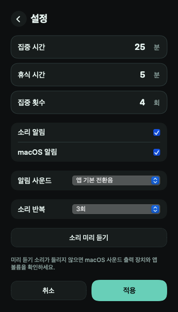

private func refreshCountdown() {
guard state.isRunning, let endDate else {
return
}
let remaining = max(0, Int(ceil(endDate.timeIntervalSinceNow)))
state.updateRemainingSeconds(remaining)
let alert = state.finishCurrentPhase()
alertService.send(alert, settings: alertSettings)

‹설정
집중 시간25분
휴식 시간5분
집중 횟수4회
소리 알림
macOS 알림
화면 깜빡임 알림신규단계가 바뀌면 타이머 창을 띄워 깜빡입니다
알림 사운드앱 기본 전환음 ⌄
소리 반복3회 ⌄
소리 미리 듣기
취소
적용